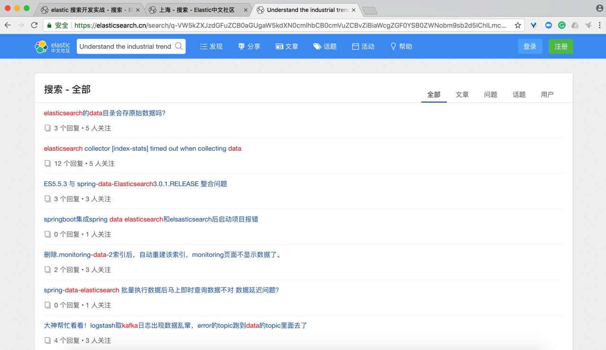
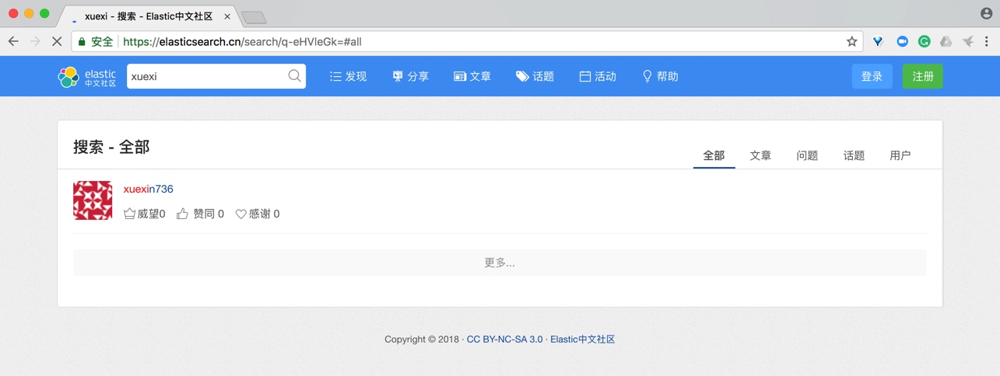
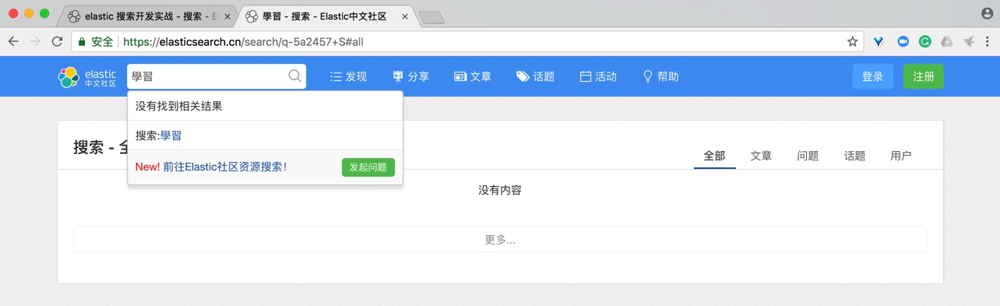

任务介绍
我们的目标网站是我们的 Elastic 中文社区：http://elasticsearch.cn，为什么我们要改造其站内搜索功能呢？我们先来看下面的一张截图：

我们搜索的关键字是 Elastic 搜开发实战，可以看到智能提示框，里面的推荐结果貌似有点糟糕，有些结果看上去完全没有体现出和关键字有什么关系，感觉搜了之后还是找不到有用的东西。我们再看一个。

将一篇日报的完整标题作为关键字搜索，在搜索结果里面，居然不是排在第一位的。
我们再随便打开一篇文章：https://elasticsearch.cn/question/1023，内容如下图：

我们随便复制一段文字：
Understand the industrial trend of big data technology (e.g. elasticsearch, web crawler, Kafka).
然后放到搜索框里面检索一下，结果如下：

可以看到，完全找不到我们的刚刚的那篇文章。
我们再来搜索一下 学习，看看结果：

有不少结果返回，然后再搜索一下 拼音 xuexi，看看结果：

可以看到只找到了一个信息。
我们再试试繁体 學習，看看搜索结果：

居然查询结果各不相同啊，但是对于搜索的用户来说，我本来就不知道有什么东西，我只是随便丢一个关键字就是想找找看，学习、xuexi 和 學習 应该无差别才对。
还有一个就是社区分享的 PPT，比如我想快速找到我感兴趣的 PPT，如下图：

因为这个分享的功能是新开发的，相关内容也没有加入到数据库的索引里面，所以按 PPT 的标题、描述和 PPT 里面的文本都查不到。
另外结果多了之后，一页一页的找也很麻烦，而且如果我想找最近一个月的文章，或者按分类、标签或者作者进行查看，也不行。没有各个维度的统计。没有对搜索结果的再过滤。
这些都是用户的痛点。
也就是本章我们要解决的任务。